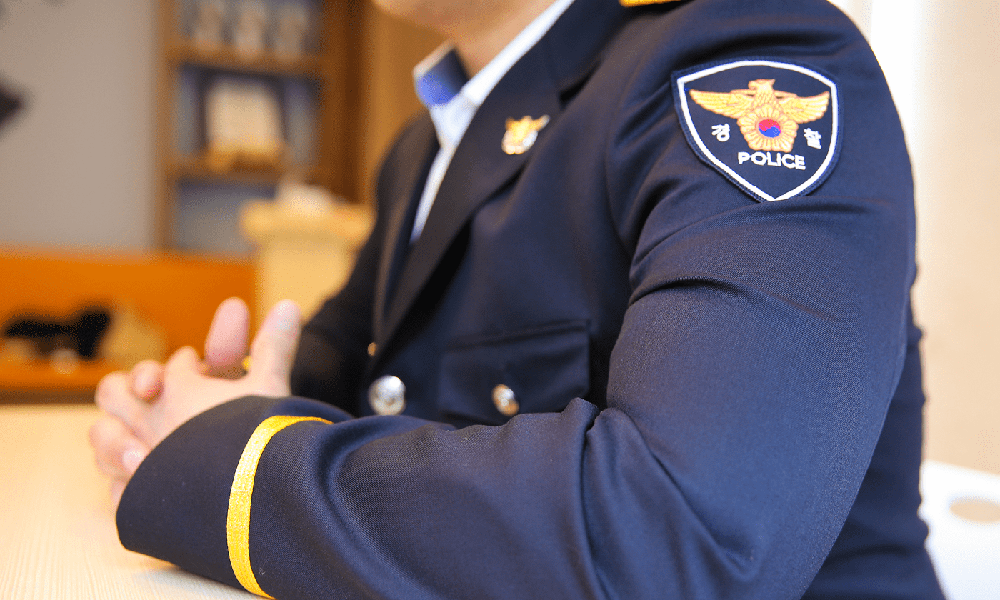

광주의 한 경찰서에서 시민의 안전을 지키는 경찰 이영은 씨(가명).
지금은 강인하고 믿음직한 그의 모습 뒤엔, 바퀴벌레가 기어 다니던 집에서 벗어나고 싶어 밖으로만 떠돌던 어린 시절의 기억이 있습니다.
지금은 강인하고 믿음직한 그의 모습 뒤엔, 바퀴벌레가 기어 다니던 집에서 벗어나고 싶어 밖으로만 떠돌던 어린 시절의 기억이 있습니다.
그래서 집보다는 골목에서
보내는 시간이 더 많았던 것 같아요.
그 다짐은, 긴 시간에 걸쳐 그의 삶을 변화시키는 힘이 되었습니다.
골목에서 보낸 어린 시절, 가난 속의 다짐
“살던 동네가 부모님 모두 일하러 나가 빈집이 익숙했던 동네라서, 집 밖에서 친구들과 어울려 놀기 바빴고 자연스레 공부엔 소홀했어요. 그리고 공부보다는 돈을 빨리 벌고 싶었습니다.”
고등학교를 졸업하자마자 선택한 곳은 전자 부품 공장이었습니다. 주야를 오가는 2교대 근무. 묵묵히 일했지만, 20대 중반이 되던 어느 날 문득 이런 생각이 들었습니다. ‘이대로 살아서는 안 되겠다.’
그럼에도 가난은 나아지지 않았어요.
그래서 저만큼은 달라지고 싶었어요.
절박한 각오로 시작한 도전
안정적인 직업과 미래를 찾던 그의 눈에 들어온 건 ‘경찰 공무원 시험’. 그러나 그 길은 녹록지 않았습니다. 특히 영어는 높은 벽이었습니다.
그뿐만 아니라 아버지까지 일을 못하게 되면서, 경제적으로도 더는 부모님께 의지할 수 없게 되었습니다.
결국 시험을 포기하고 다시 일터로 돌아갔고, 4년간 꾸준히 일을 했습니다.
하지만 마음속에서 꺼지지 않던 불씨. 그는 미래에 대한 고민 끝에 다시 한 번 도전을 결심했습니다. ‘이번에도 안 되면, 정말 끝이다’라는 각오로 하루 12시간씩 독서실에 앉아 자신과 싸웠습니다. 처음엔 누구도 확신하지 않았습니다. 가족도 심지어 그조차도. 하지만 그는 결국, 1년 만에 해냈습니다.
어린 시절 받은 후원의 의미
그는 광주 지역 경찰로 임용되었고, 마침내 그토록 벗어나고 싶었던 ‘벌레가 나오던 집’을 떠날 수 있었습니다. 그리고 좋은 사람과 가정을 꾸리면서 함께 빛나는 미래를 꿈꿀 수 있게 되었습니다.

그의 기억 속엔 월드비전 복지관 프로그램을 통해 컴퓨터와 피아노를 배운 기억이 또렷이 남아 있습니다. 방학마다 참여한 캠프, 처음 가 본 스키장과 후원자로부터 받은 자전거 선물까지 어린 시절 즐거웠던 추억입니다.
세상을 알아갈수록
이런 도움이 얼마나
고마운 일이었는지 알게 되었어요.
오늘, 받은 사랑을 이어가다
그는 지금 아내와 함께 두 명의 아동을 후원하고 있습니다.
후원받은 것에 대한 고마움이요.
그래서 후원을 시작했어요. 적은 금액이라도,
누군가에겐 인생을 바꿔줄 수 있잖아요.
그리고 그 아이도 저처럼 언젠가 여유가 생기면
보답하지 않을까요?

후원을 받는 아이들이 자신의 환경을 탓하기보단,
할 수 있는 최선을 다했으면 좋겠어요.
어떻게 극복해 나갈 수 있을지도 고민하고요.
그리고 누군가 나를 위해
사랑과 응원을 보내고 있다는 것과
누군가 곁에 있다는 사실이,
언젠가 큰 힘이 된다는 걸 꼭 기억했으면 좋겠어요.
저는 그 사랑 덕분에 여기까지 올 수 있었으니까요.
할 수 있는 최선을 다했으면 좋겠어요.
어떻게 극복해 나갈 수 있을지도 고민하고요.
그리고 누군가 나를 위해
사랑과 응원을 보내고 있다는 것과
누군가 곁에 있다는 사실이,
언젠가 큰 힘이 된다는 걸 꼭 기억했으면 좋겠어요.
저는 그 사랑 덕분에 여기까지 올 수 있었으니까요.

글. 월드비전 커뮤니케이션팀 박현아
사진. 월드비전 커뮤니케이션팀 윤지영
사진. 월드비전 커뮤니케이션팀 윤지영